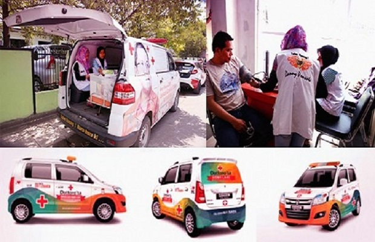
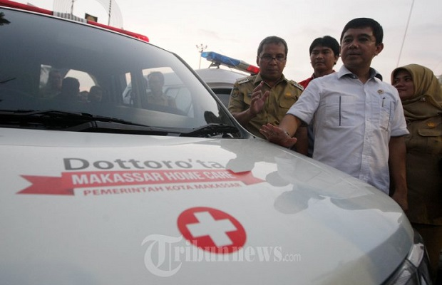

Program Pemerintah Kota Makassar Melalui Home Care Dottorotta’ untuk Mewujudkan Kualitas Hidup
Program Home Care Dottorotta merupakan pelayanan kesehatan kepada masyarakat kota makassar selama 24 jam. Layanan kesehatan merupakan hal yang utama dan dibutuhkan oleh masyarakat, baik masyarakat Kota maupun di luar Kota Makassar,
View More

Home Care – Dottorotta di Kota Makassar, Aplikatif Kah?
Sejak tahun 2015, inovasi Home Care – Dottorotta di Kota Makassar telah menjadi isu hangat. Bagaimana tidak? melalui inovasi tersebut pemerintah Kota Makassar telah berhasil meraih penghargaan Top 35 inovasi pelayanan publik
View More